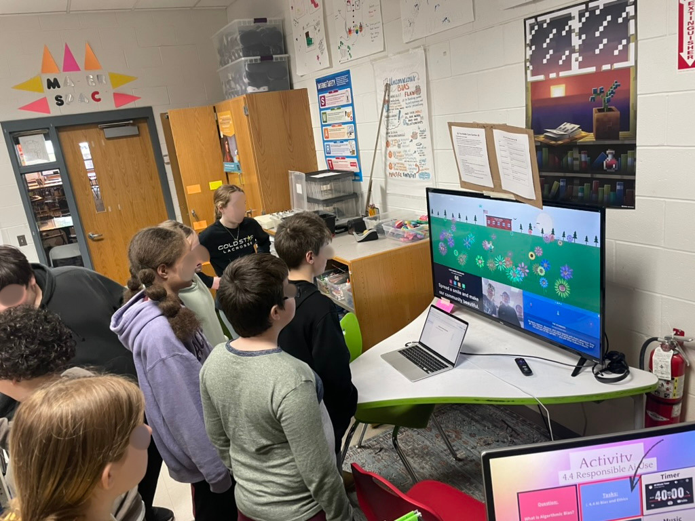
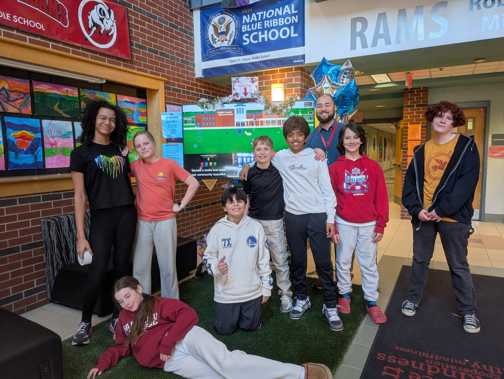

Work
Selected Projects
Curriculum, apps, installations, and student-facing tools built at the intersection of education, design, and code.
Featured
Care Garden, An Interactive PBIS Installation
Before becoming a teacher I spent time with creative computing communities in p5.js and Processing, so when I took over the computer science program at Robert Adams I wanted my students to experience what it feels like to use code to make something expressive and social, not just functional. We spent a unit on creative coding in p5 building generative sketches, and it became the foundation for Care Garden.
Care Garden is a live, generative art installation I built in p5.js and staged in our school lobby during a week of PBIS programming. Students contributed small acts of kindness through a simple input on a kiosk, and each contribution bloomed as a unique flower in a shared digital garden on the display. Over the course of the week, thousands of entries streamed in, we watched the garden fill up with student-generated expressions of care, and the display became a gathering place in the lobby where kids would stop, point at their flower, and pull friends over to add their own.
From the Installation
The lobby display in action and the community around it.


Browse by Category
Explore the Work
Student-Facing
Tools and apps built for the students I teach, including Rams Care and Guess That Teacher.
View →Curriculum
Units and systems I designed, modular VEX robotics, creative computing, and AI & ethics.
View →Apps
Web apps: a PBIS survey data dashboard, a redesigned Unified Arts site, and a curriculum platform in progress.
View →Special Projects
Ongoing experiments, including Remy, a Jetson-powered classroom robot.
View →Clubs
Student clubs I lead, Computer Club and Camera Club, focused on exploration and creative expression.
View →